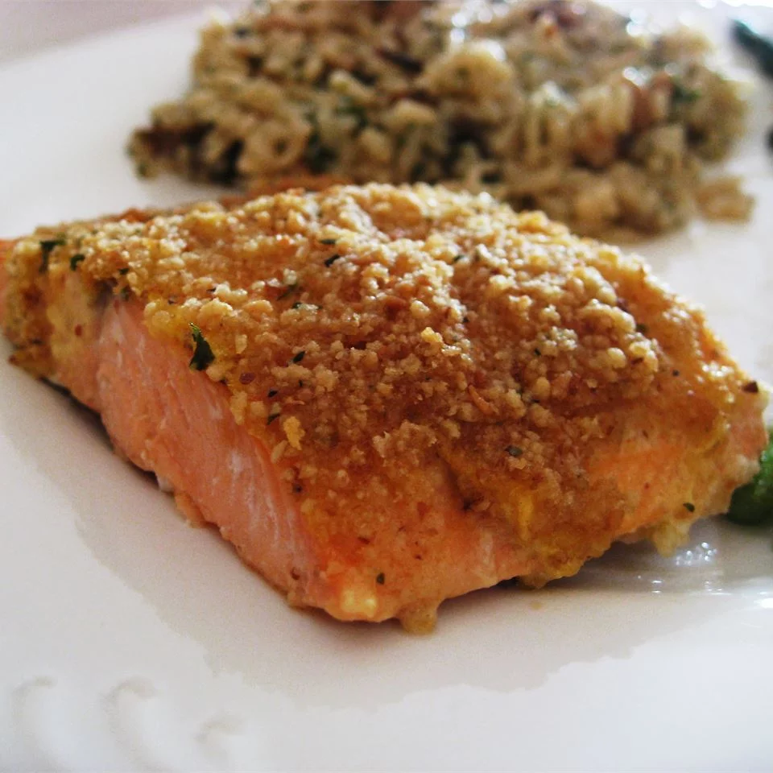

Odin Recipes

Baked Salmon Fillets Dijon
Delicious baked salmon coated with Dijon-style mustard and seasoned bread crumbs, and topped with butter.
Ingredients
- 4 (4 ounce) fillets salmon
- 3 tablespoons prepared Dijon-style mustard
- salt and pepper to taste
- 1/4 cup Italian-style dry bread crumbs
- 1/4 cup butter, melted
Steps
Links to other recipes